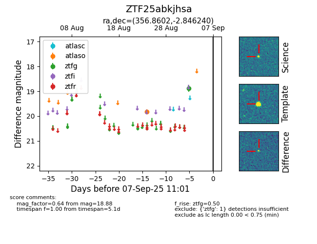

FINK: ZTF25abkjhsa
Lasair: ZTF25abkjhsa
ALeRCE: ZTF25abkjhsa
ZTF25abkjhsa (ztf,fink)
equatorial (ra, dec) = (356.8602,-2.84624)
galactic (l, b) = (87.9619,-61.29465)

last atlaso=19.83, ztfg=18.88
1 atlaso, 1 ztfg detections